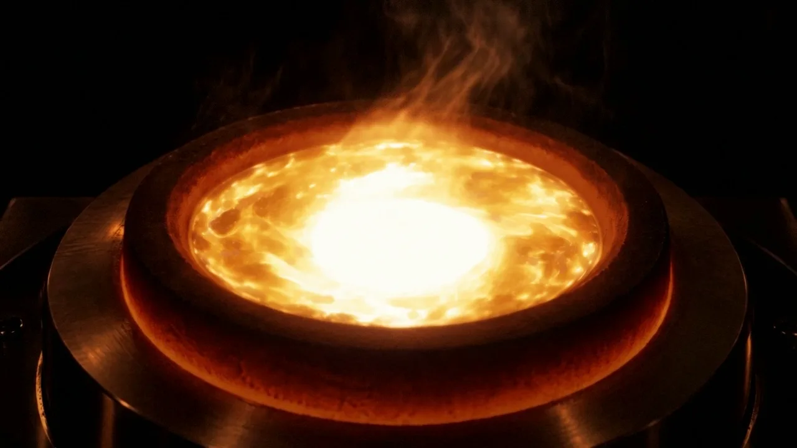
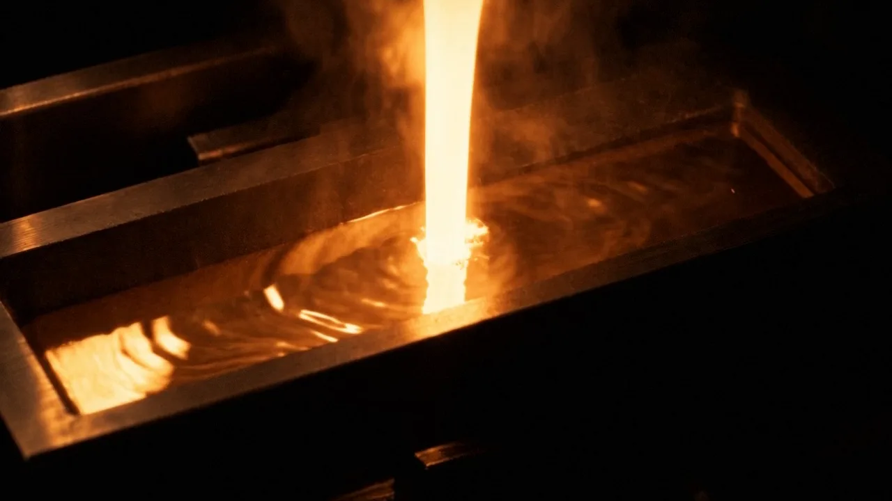
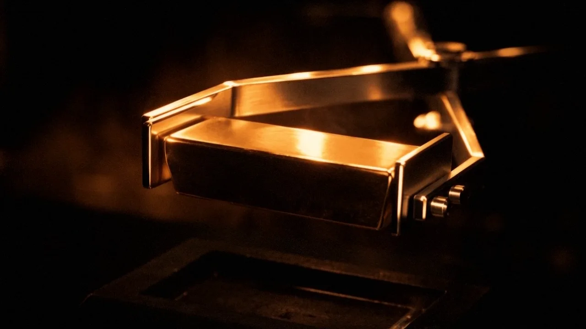
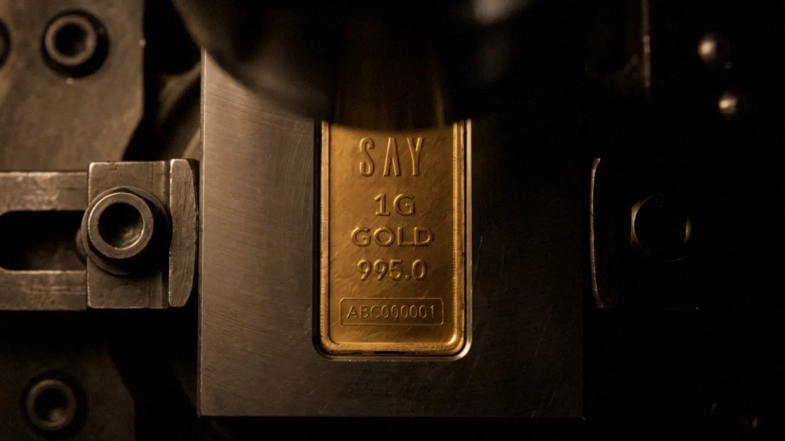

SAY METALSAY METAL
1997 yılından bu yana değerli metaller, ekstraktif metalurji ve geri dönüşüm alanlarında faaliyet gösteriyoruz.Since 1997 we have been building our expertise in precious metals, extractive metallurgy and recycling.
Yaklaşık 30 yıllık sektörel deneyimiyle metal geri kazanımı, rafinasyon ve malzeme analizi alanlarındaki uzmanlığını sürekli geliştirmiştir. Metalurjik bilgi birikimini yenilikçi teknolojilerle birleştiren SAY METAL, sürdürülebilir üretim, kaynak verimliliği ve ikincil hammaddelerin ekonomiye yeniden kazandırılması hedefiyle çalışmalarını sürdürmektedir.
With nearly three decades of industry experience, the company has continuously expanded its capabilities in metal recovery, refining, and material analysis. Combining metallurgical expertise with innovative technologies, SAY METAL remains committed to sustainable production, resource efficiency, and creating value from secondary raw materials.




Görseller: SAY süreç filminden karelerImages: frames from the SAY process film
Zaman akışıTimeline
1997 → 2026
Taslak akış · ara yıllar ve tarihler firma onayıyla tamamlanacakDraft timeline · intermediate years and dates pending company confirmation
Kuruluş: bakırFounded: copper
Tesisimiz 1997 yılından beri bakır sektöründe faaliyet göstermektedir.
Our facility has been operating in the copper sector since 1997.
Kaynak: saymetal.com.trSource: saymetal.com.tr
Altın ve gümüşGold and silver
2004 yılından beri altın ve gümüş sektöründe öncü bir kuruluş olma yolundayız.
Since 2004 we have been on our way to becoming a leading company in the gold and silver sector.
Kaynak: saymetal.com.trSource: saymetal.com.tr
İTÜ Maden Fakültesi'nde sunumPresentation at the ITU Faculty of Mines
III. Sektör Akademisyen Öğrenci Buluşmaları, 22–23 Ekim 2024, İhsan Ketin Konferans Salonu.
3rd Industry, Academia and Student Meetings, 22–23 October 2024, İhsan Ketin Conference Hall.
Planda "2023 İTÜ Maden Konferansı"; fotoğraftaki slayt 2024 diyorPlan says "2023 ITU Mining Conference"; the slide in the photo says 2024
Messe Frankfurt katılımıMesse Frankfurt participation
Frankfurt fuarına katılım.
Participation in the Frankfurt trade fair.
İTÜ Maden Konferansı sponsorluğu ve Messe FrankfurtITU Mining Conference sponsorship and Messe Frankfurt
İTÜ Maden Konferansı'na sponsorluk ve Messe Frankfurt fuarında SAY METAL standı.
Sponsorship of the ITU Mining Conference and the SAY METAL stand at Messe Frankfurt.
Etkinlik ve yıllar ekip planından ve Drive klasör adlarından; teyit edilecekEvents and years from the team plan and Drive folder names; to be confirmed
Silivri tesisiSilivri facility
SAY METAL Silivri tesisinde sona yaklaşıyor.
SAY METAL is nearing completion at its Silivri facility.
Ayrıntılar firma onayı bekliyorDetails pending company confirmation
DeğerlerimizOur Values
SAY METAL, güvenilirlik, şeffaflık, teknolojik yenilikçilik ve sürekli gelişim ilkelerini kurumsal yaklaşımının merkezine yerleştirir.
SAY METAL places reliability, transparency, technological innovation, and continuous improvement at the core of its corporate philosophy.
Sayfaya git →View page → 03Sertifikalar & KaliteCertificates & Quality
SAY METAL olarak kalite ve güvenilirliği tüm faaliyetlerimizin merkezinde tutuyoruz.
At SAY METAL, quality and reliability are at the core of our operations.
Sayfaya git →View page →